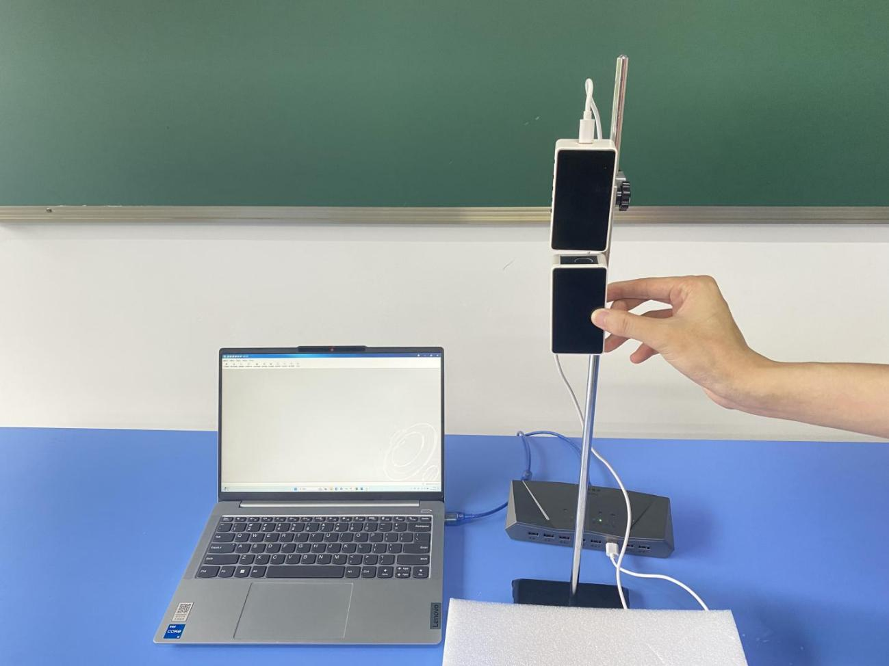
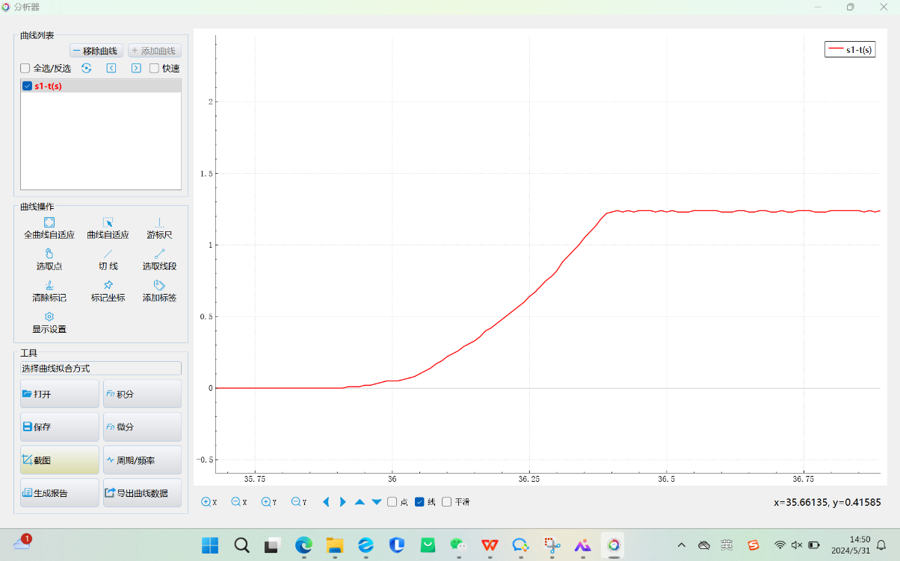
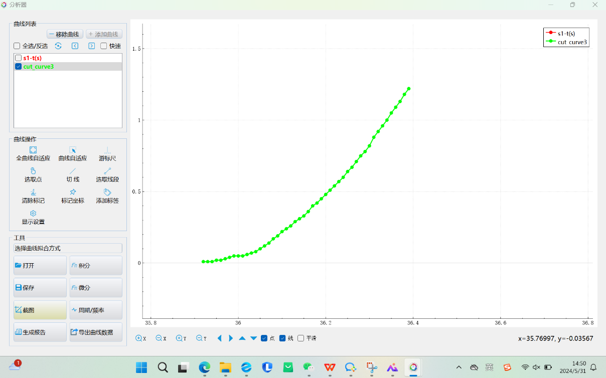
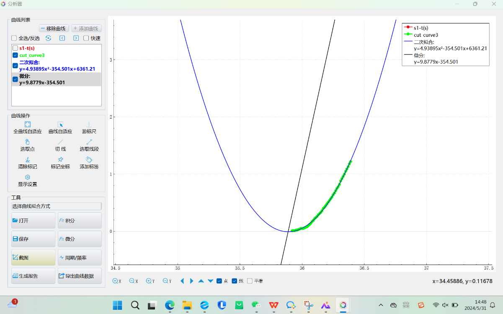

实验十二 探究自由落体运动的规律
【实验目的】
了解物体做自由落体运动时，其位移和时间的关系，研究物体做自由落体运动的规律。
【实验原理】
采用运动传感器研究自由落体运动时，可将运动传感器的发射端当作自由落体运动的物体，运用软件记录其下落时的位移和时间的对应关系，通过软件的分析功能，便可对其位移和时间的关系进行分析，找出其对应的关系。
【实验器材】
数据采集器、一体位移发射器、一体位移接收器、计算机、连接套件、铁架台、海绵垫。
【实验装置】

【实验操作步骤】
1.搭建好实验环境，将运动传感器发射端固定在铁架台上，然后将铁架台移至桌子边沿，保证发射端竖直向下；
2.打开实验数据分析软件，连接好数据采集器和运动传感器，将运动传感器发射端和发射端靠在一起，点击“调零”；
3.在运动传感器正下方铺上海绵垫，使反射端能落在海绵垫上；
4.打开“表格视图”，点击“采集”按钮；
5.将运动传感器反射端靠近发射端，由静止开始释放，待其落在海绵垫上之后，点击“停止”按钮；
6.点击“数据分析”做出反射端自由落体的“位移—时间”曲线；
7.调整曲线至合适大小进行观察分析；
8.选取下落过程中的一段曲线，对所选曲线进行“二次拟合”；
9.对“二次拟合”曲线进行“微分”，得到自由落体运动的“速度－时间”曲线；

位移-时间曲线

选取线段

数据处理（二次拟合、微分）
【思考与讨论】
分析反射端作自由落体运动的位移时间图像，结合二次拟合图像，总结自由落体运动的规律。
【自由探究】
根据实验得到的数据，运用通用软件的图像分析功能，我们还可以进一步分析，求出反射端作自由落体运动时的加速度。试一试，看你能不能做到。